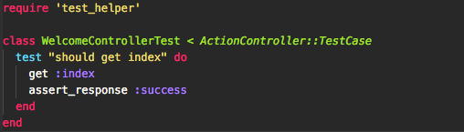
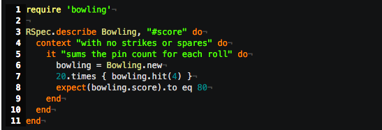
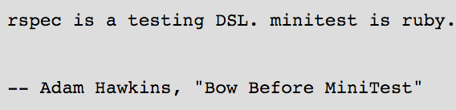
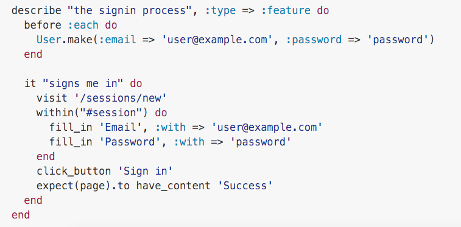
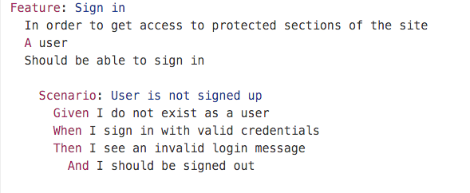
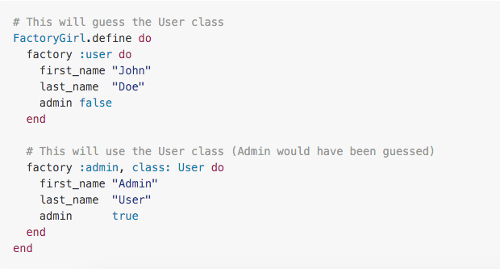
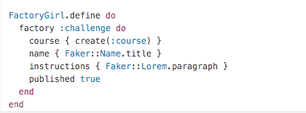

Hablando de testing en Ruby

Por Nicolas Mena Garzón http://nicolasmena.me
Meetup Barranquilla Ruby Users Group Por Nicolas Mena Garzón
Por Nicolas Mena Garzón http://nicolasmena.me
a software development process that relies on the repetition of a very short development cycle.. https://en.wikipedia.org/wiki/Test-driven_development
... software development process based on test-driven development (TDD). Behavior-driven development combines the general techniques and principles of TDD with ideas from domain-driven design and object-oriented analysis... https://en.wikipedia.org/wiki/Behavior-driven_development
mas info: Tao of BDD / TDD
minitest provides a complete suite of testing facilities supporting TDD, BDD, mocking, and benchmarking... Minitest github project
Behaviour Driven Development for Ruby. making TDD Productive and Fun.... Rspec info page
http://ruby-doc.org/stdlib-2.0.0/libdoc/minitest/rdoc/MiniTest.html
Acceptance test framework for web applications http://jnicklas.github.com/capybara/
Cucumber is a tool for running automated tests written in plain language https://github.com/cucumber/cucumber-ruby
A library for setting up Ruby objects as test data. https://github.com/thoughtbot/factory_girl
A library for generating fake data such as names, addresses, and phone numbers. https://github.com/stympy/faker
Shoulda Matchers provides RSpec- and Minitest-compatible one-liners that test common Rails functionality http://matchers.shoulda.io